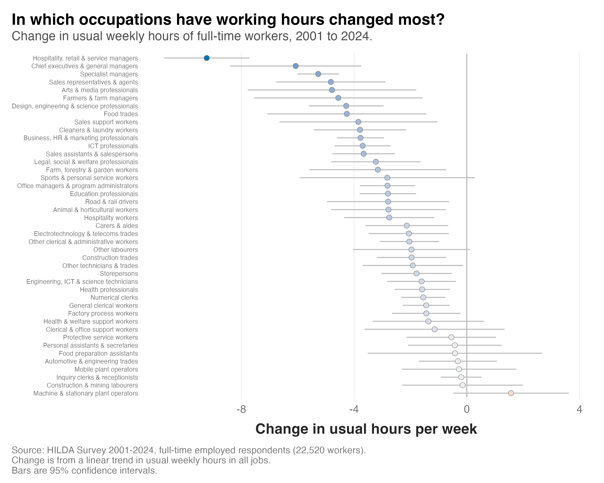

I've posted before on the fact that average working hours in Australia have gradually decreased over the last couple of decades. Since 2001, the average working week among full-time workers has declined from 46.6 hours to 43.1 hours in 2024. However, these changes aren't uniform across the economy. Workers in some occupations have seen their hours decline more than others.
To look at this, I used HILDA Survey data on 22,520 full-time workers between 2001 and 2024. For each of 43 occupation groups, I estimated the change in usual weekly hours from a linear trend across all 24 years.
The figure below ranks the occupations from the largest decrease at the top to the largest increase at the bottom. The darker the blue, the bigger the decrease. The bars show the 95% confidence interval around each estimate.

Here's what I found:
1) Hours fell in the majority of occupations. The estimated change was negative in 42 of the 43 occupations, and for 31 of them the confidence interval sits entirely below zero. Machine and stationary plant operators were the only group with a positive estimate (1.6 hours), and its interval includes zero.
2) Managers saw the biggest decreases. The top three spots all belong to managers. Hospitality, retail and service managers are working about 9.2 fewer hours a week than in 2001, chief executives and general managers 6.1 fewer, and specialist managers 5.3 fewer.
3) A handful of occupations were more stable. Construction and mining labourers, inquiry clerks and receptionists, mobile plant operators and automotive and engineering trades all changed by less than half an hour per week.
Changes in working hours can be a double-edged sword. For example, managers came down from a high starting point. In 2001, full-time hospitality, retail and service managers were working about 53 hours a week, and chief executives about 54. Now they sit closer to 44 and 48. For people in those roles, that may be a good thing, because very long weeks are linked to high work demands, which in turn can lead to burnout and poorer health.
In other cases, particularly in occupations where casual work is common and people are paid by the hour, a reduction in working hours may not be as welcome. Sales assistants, sales support workers, cleaners and hospitality workers each lost around three to four hours a week, and many people in these jobs are employed casually. The data can't tell us whether these shorter weeks were chosen or imposed. But if imposed, they amount to a pay cut.
It will be interesting to see which occupations change over the next five to ten years as the disruption from AI embeds itself in the way work gets done. Will the time saved by AI show up as shorter weeks, more work in the same hours, or fewer jobs?